costs = matrix(c(-1, 0, 5, 0), nrow = 2, dimnames =
list("Predicted Credit" = c("good", "bad"),
Truth = c("good", "bad")))
costs Truth
Predicted Credit good bad
good -1 5
bad 0 0Raphael Sonabend
Imperial College London
Patrick Schratz
Friedrich Schiller University Jena
Damir Pulatov
University of Wyoming
John Zobolas
Institute for Cancer Research, Oslo University Hospital
So far, this book has only considered two tasks. In Chapter 2 we introduced deterministic regression as well as deterministic and probabilistic single-label classification (Table 13.1). But our infrastructure also works well for many other tasks, some of which are available in extension packages (Figure 1.1) and some are available by creating pipelines with mlr3pipelines. In this chapter, we will take you through just a subset of these new tasks, focusing on the ones that have a stable API. As we work through this chapter we will refer to the ‘building blocks’ of mlr3, this refers to the base classes that must be extended to create new tasks, these are Prediction, Learner, Measure, and Task. Table 13.1 summarizes available extension tasks, including the package(s) they are implemented in and a brief description of the task.
mlr3 infrastructure. As we have a growing community of contributors, this list is far from exhaustive and many ‘experimental’ task implementations exist; this list just represents the tasks that have a functioning interface.
| Task | Package | Description |
|---|---|---|
| Deterministic regression | mlr3 |
Point prediction of a continuous variable. |
| Deterministic single-label classification | mlr3 |
Prediction of a single class for each observation. |
| Probabilistic single-label classification | mlr3 |
Prediction of the probability of an observation falling into one or more mutually exclusive categories. |
| Cost-sensitive classification |
mlr3 and mlr3pipelines
|
Classification predictions with unequal costs associated with misclassifications. |
| Survival analysis | mlr3proba |
Time-to-event predictions with possible ‘censoring’. |
| Density estimation | mlr3proba |
Unsupervised estimation of probability density functions. |
| Spatiotemporal analysis |
mlr3spatiotempcv and mlr3spatial
|
Supervised prediction of data with spatial (e.g., coordinates) and/or temporal outcomes. |
| Cluster analysis | mlr3cluster |
Unsupervised estimation of homogeneous clusters of data points. |
We begin by discussing a task that does not require any additional packages or infrastructure, only the tools we have already learned about from earlier chapters. In ‘regular’ classification, the aim is to optimize a metric (often the misclassification rate) while assuming all misclassification errors are deemed equally severe. A more general approach is cost-sensitive classification, in which costs caused by different kinds of errors may not be equal. The objective of cost-sensitive classification is to minimize the expected costs. We will use tsk("german_credit") as a running example.
Imagine you are trying to calculate if giving someone a loan of $5K will result in a profit after one year, assuming they are expected to pay back $6K. To make this calculation, you will need to predict if the person will have good credit. This is a deterministic classification problem where we are predicting whether someone will be in class ‘Good’ or ‘Bad’. Now let us consider some potential costs associated with each prediction and the eventual truth. As cost-sensitive classification is a minimization problem, we assume lower costs correspond to higher profits/positive outcomes, hence we write profits as negative values and losses as positive values:
costs = matrix(c(-1, 0, 5, 0), nrow = 2, dimnames =
list("Predicted Credit" = c("good", "bad"),
Truth = c("good", "bad")))
costs Truth
Predicted Credit good bad
good -1 5
bad 0 0In this example, if the model predicts that the individual has bad credit (bottom row) then there is no profit or loss, the loan is not provided. If the model predicts that the individual has good credit and indeed the customer repays the loan with interest (top left), then you will make a $1K profit. On the other hand, if they default (top right), you will lose $5K.
We will now see how to implement a more nuanced approach to classification errors with msr("classif.costs"). This measure takes one argument, which is a matrix with row and column names corresponding to the class labels in the task of interest. Let us put our insurance example into practice, notice that we have already named the cost matrix as required for the measure:
library(mlr3verse)
tsk_german = tsk("german_credit")
msr_costs = msr("classif.costs", costs = costs)
msr_costs<MeasureClassifCosts:classif.costs>: Cost-sensitive Classification
* Packages: mlr3
* Range: [-Inf, Inf]
* Minimize: TRUE
* Average: macro
* Parameters: normalize=TRUE
* Properties: -
* Predict type: responselearners = lrns(c("classif.log_reg", "classif.featureless",
"classif.ranger"))
bmr = benchmark(benchmark_grid(tsk_german, learners,
rsmp("cv", folds = 3)))
bmr$aggregate(msr_costs)[, c(4, 7)] learner_id classif.costs
1: classif.log_reg 0.1791
2: classif.featureless 0.8002
3: classif.ranger 0.2491In this experiment, we find that the logistic regression learner happens to perform best as it minimizes the expected costs (and maximizes expected profits) and the featureless learner performs the worst. All losses result in positive costs, which means each model results in us losing money. To improve our models, we will now turn to thresholding.
As we have discussed in Chapter 2, thresholding is a method to fine-tune the probability at which an observation will be predicted as one class label or another. Currently in our running example, the models above will predict a customer has good credit (in the class ‘Good’) if the probability of good credit is greater than 0.5. Here, this might not be a sensible approach as we would likely act more conservatively and reject more credit applications with a higher threshold due to the non-uniform costs. This is highlighted in the "threshold" autoplot (Figure 13.1), which plots msr("classif.costs") over all possible thresholds.
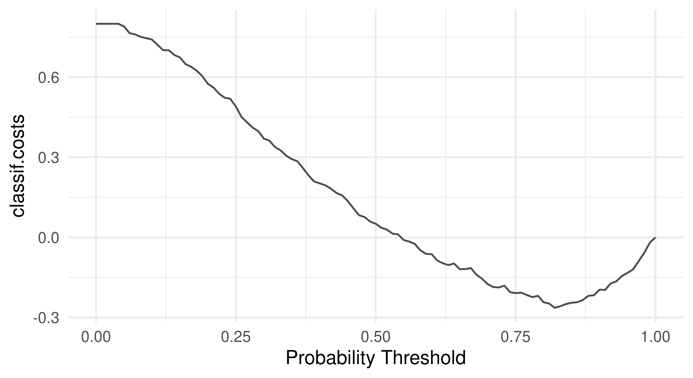
As expected, the optimal threshold is greater than 0.5 which means the optimal model should predict ‘bad’ credit more often than not.
The optimal threshold can be automated by making use of mlr3tuning (Chapter 4) and mlr3pipelines (Chapter 7) to tune po("tunethreshold"). Continuing the same example:
po_cv = po("learner_cv", lrn("classif.log_reg", predict_type = "prob"))
graph = po_cv %>>% po("tunethreshold", measure = msr_costs)
learners = list(as_learner(graph), lrn("classif.log_reg"))
bmr = benchmark(benchmark_grid(tsk_german, learners,
rsmp("cv", folds = 3)))OptimInstanceSingleCrit is deprecated. Use OptimInstanceBatchSingleCrit instead.
OptimInstanceSingleCrit is deprecated. Use OptimInstanceBatchSingleCrit instead.
OptimInstanceSingleCrit is deprecated. Use OptimInstanceBatchSingleCrit instead.bmr$aggregate(msr_costs)[, c(4, 7)] learner_id classif.costs
1: classif.log_reg.tunethreshold -0.1060
2: classif.log_reg 0.1481By using po("learner_cv") for internal resampling and po("tunethreshold") to find the optimal threshold we have improved our model performance considerably and can now even expect a profit.
Survival analysis is a field of statistics concerned with trying to predict/estimate the time until an event takes place. This predictive problem is unique as survival models are trained and tested on data that may include ‘censoring’, which occurs when the event of interest does not take place. Survival analysis can be hard to explain in the abstract, so as a working example consider a marathon runner in a race. Here the ‘survival problem’ is trying to predict the time when the marathon runner finishes the race. However, if the event of interest does not take place (e.g., the marathon runner gives up and does not finish the race), they are said to be censored. Instead of throwing away information about censored events, survival analysis datasets include a status variable that provides information about the ‘status’ of an observation. So in our example, we might write the runner’s outcome as \((4, 1)\) if they finish the race at four hours, otherwise, if they give up at two hours we would write \((2, 0)\).
The key to modeling in survival analysis is that we assume there exists a hypothetical time the marathon runner would have finished if they had not been censored, it is then the job of a survival learner to estimate what the true survival time would have been for a similar runner, assuming they are not censored (see Figure 13.2). Mathematically, this is represented by the hypothetical event time, \(Y\), the hypothetical censoring time, \(C\), the observed outcome time, \(T = \min(Y, C)\), the event indicator \(\Delta := (T = Y)\), and as usual some features, \(X\). Learners are trained on \((T, \Delta)\) but, critically, make predictions of \(Y\) from previously unseen features. This means that unlike classification and regression, learners are trained on two variables, \((T, \Delta)\), which, in R, is often captured in a Surv object. Relating to our example above, the runner’s outcome would then be \((T = 4, \Delta = 1)\) or \((T = 2, \Delta = 0)\). Another example is in the code below, where we randomly generate six survival times and six event indicators, an outcome with a + indicates the outcome is censored, otherwise, the event of interest occurred.
[1] 0.5523+ 0.2905 0.4404+ 0.1184 0.9216+ 0.7326 Readers familiar with survival analysis will recognize that the description above applies specifically to ‘right censoring’. Currently, this is the only form of censoring available in the mlr3 universe, hence restricting our discussion to that setting. For a good introduction to survival analysis see Collett (2014) or for machine learning in survival analysis specifically see R. Sonabend and Bender (2023).
For the remainder of this section, we will look at how mlr3proba (R. Sonabend et al. 2021) extends the building blocks of mlr3 for survival analysis. We will begin by looking at objects used to construct machine learning tasks for survival analysis, then we will turn to the learners we have implemented to solve these tasks, before looking at measures for evaluating survival analysis predictions, and then finally we will consider how to transform prediction types.
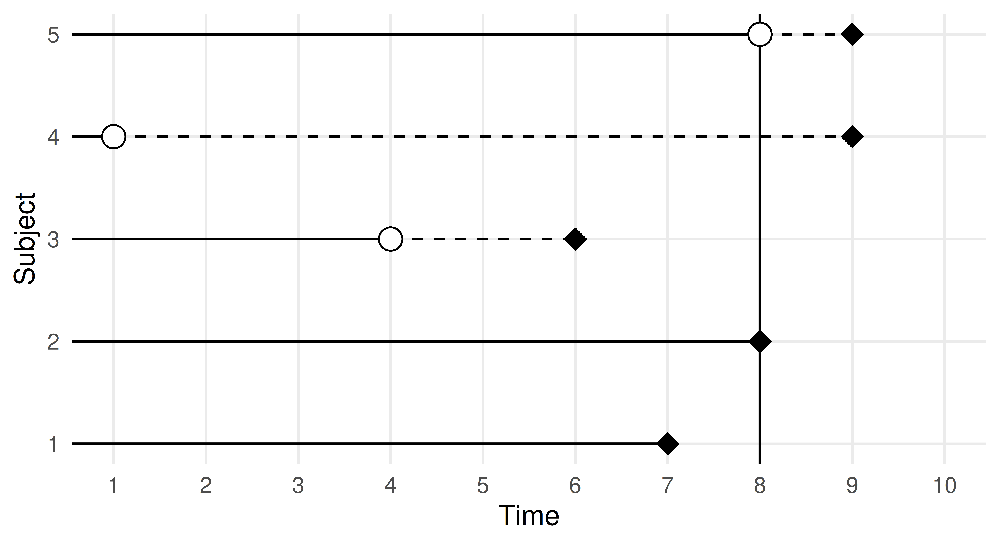
As we saw in the introduction to this section, survival algorithms require two targets for training, this means the new TaskSurv object expects two targets. The simplest way to create a survival task is to use as_task_surv(), as in the following code chunk. Note this has more arguments than as_task_regr() to reflect multiple target and censoring types, time and event arguments expect strings representing column names where the ‘time’ and ‘event’ variables are stored, type refers to the censoring type (currently only right censoring supported so this is the default). as_task_surv() coerces the target columns into a Surv object. In this section we will use the rats dataset as a running example, this dataset looks at predicting if a drug treatment was successful in preventing 150 rats from developing tumors. The dataset, by its own admission, is not perfect and should generally be treated as ‘dummy’ data, which is good for examples but not real-world analysis.
library(mlr3verse)
library(mlr3proba)
library(survival)
tsk_rats = as_task_surv(survival::rats, time = "time",
event = "status", type = "right", id = "rats")
tsk_rats$head() time status litter rx sex
1: 101 0 1 1 f
2: 49 1 1 0 f
3: 104 0 1 0 f
4: 91 0 2 1 m
5: 104 0 2 0 m
6: 102 0 2 0 mPlotting the task with autoplot results in a Kaplan-Meier plot (Figure 13.3) which is a non-parametric estimator of the probability of survival for the average observation in the training set.
autoplot(tsk_rats)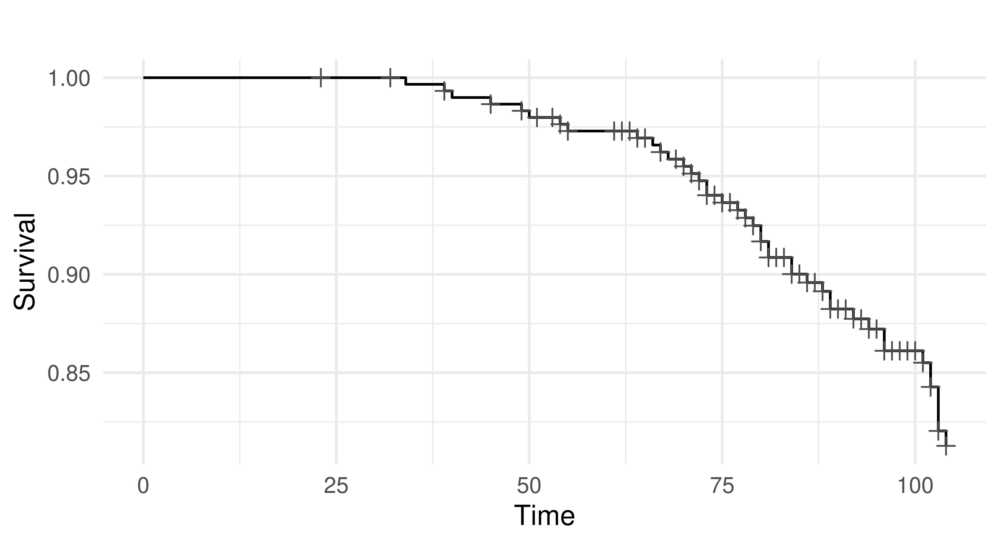
tsk("rats"). x-axis is time variable and y-axis is survival function, S(T), defined by \(1 -\) F(T) where F is the cumulative distribution function. Crosses indicate points where censoring takes place.
As well as creating your own tasks, you can load any of the tasks shipped with mlr3proba:
as.data.table(mlr_tasks)[task_type == "surv"] key label task_type nrow ncol properties
1: actg ACTG 320 surv 1151 13
2: gbcs German Breast Cancer surv 686 10
3: gbsg German Breast Cancer surv 686 10
4: grace GRACE 1000 surv 1000 8
5: lung Lung Cancer surv 168 9
6: mgus MGUS surv 176 9
7: pbc Primary Biliary Cholangitis surv 276 19
8: rats Rats surv 300 5
9: veteran Veteran surv 137 8
10: whas Worcester Heart Attack surv 481 11
7 variable(s) not shown: [lgl, int, dbl, chr, fct, ord, pxc]The interface for LearnerSurv and PredictionSurv objects is identical to the regression and classification settings discussed in Chapter 2. Similarly to these settings, survival learners are constructed with lrn().
mlr3proba has a different predict interface to mlr3 as all possible types of prediction (‘predict types’) are returned when possible for all survival models – i.e., if a model can compute a particular predict type then it will be returned in PredictionSurv. The reason for this design decision is that all these predict types can be transformed to one another and it is therefore computationally simpler to return all at once instead of rerunning models to change predict type. In survival analysis, the following predictions can be made:
response – Predicted survival time.distr – Predicted survival distribution, either discrete or continuous.lp – Linear predictor calculated as the fitted coefficients multiplied by the test data.crank – Continuous risk ranking.We will go through each of these prediction types in more detail and with examples to make them less abstract. We will use lrn("surv.coxph") trained on tsk("rats") as a running example, since for this model, all predict types except response can be computed.
tsk_rats = tsk("rats")
split = partition(tsk_rats)
prediction_cph = lrn("surv.coxph")$train(tsk_rats, split$train)$
predict(tsk_rats, split$test)
prediction_cph<PredictionSurv> for 99 observations:
row_ids time status crank lp distr
3 104 FALSE -0.4356 -0.4356 <list[1]>
5 104 FALSE -3.1265 -3.1265 <list[1]>
7 104 FALSE 0.4090 0.4090 <list[1]>
--- --- --- --- --- ---
297 79 TRUE 0.4300 0.4300 <list[1]>
298 92 FALSE -1.4339 -1.4339 <list[1]>
300 102 FALSE -2.2609 -2.2609 <list[1]>Counterintuitively for many, the response prediction of predicted survival times is the least common predict type in survival analysis. The likely reason for this is due to the presence of censoring. We rarely observe the true survival time for many observations and therefore it is unlikely any survival model can confidently make predictions for survival times. This is illustrated in the code below.
In the example below we train and predict from a survival SVM (lrn("surv.svm")), note we use type = "regression" to select the algorithm that optimizes survival time predictions and gamma.mu = 1e-3 is selected arbitrarily as this is a required parameter (this parameter should usually be tuned). We then compare the predictions from the model to the true data.
library(mlr3extralearners)
prediction_svm = lrn("surv.svm", type = "regression", gamma = 1e-3)$
train(tsk_rats, split$train)$predict(tsk_rats, split$test)
data.frame(pred = prediction_svm$response[1:3],
truth = prediction_svm$truth[1:3]) pred truth
1 86.36 104+
2 86.16 104+
3 85.95 104+As can be seen from the output, our predictions are all less than the true observed time, which means we know our model underestimated the truth. However, because each of the true values are censored times, we have absolutely no way of knowing if these predictions are slightly bad or absolutely terrible, (i.e., the true survival times could be \(105, 99, 92\) or they could be \(300, 1000, 200\)). Hence, with no realistic way to evaluate these models, survival time predictions are rarely useful.
Unlike regression in which deterministic/point predictions are most common, in survival analysis distribution predictions are much more common. You will therefore find that the majority of survival models in mlr3proba will make distribution predictions by default. These predictions are implemented using the distr6 package, which allows visualization and evaluation of survival curves (defined as \(1 -\) cumulative distribution function). Below we extract the first three $distr predictions from our running example and calculate the probability of survival at \(t = 77\).
prediction_cph$distr[1:3]$survival(77) [,1] [,2] [,3]
77 0.9412 0.9959 0.8684The output indicates that there is a 94.1%, 99.6%, 86.8%, chance of the first three predicted rats being alive at time 77 respectively.
lp, often written as \(\eta\) in academic writing, is computationally the simplest prediction and has a natural analog in regression modeling. Readers familiar with linear regression will know that when fitting a simple linear regression model, \(Y = X\beta\), we are estimating the values for \(\beta\), and the estimated linear predictor (lp) is then \(X\hat{\beta}\), where \(\hat{\beta}\) are our estimated coefficients. In simple survival models, the linear predictor is the same quantity (but estimated in a slightly more complicated way). The learner implementations in mlr3proba are primarily machine-learning focused and few of these models have a simple linear form, which means that lp cannot be computed for most of these. In practice, when used for prediction, lp is a proxy for a relative risk/continuous ranking prediction, which is discussed next.
The final prediction type, crank, is the most common in survival analysis and perhaps also the most confusing. Academic texts will often refer to ‘risk’ predictions in survival analysis (hence why survival models are often known as ‘risk prediction models’), without defining what ‘risk’ means. Often, risk is defined as \(\exp(\eta)\) as this is a common quantity found in simple linear survival models. However, sometimes risk is defined as \(\exp(-\eta)\), and sometimes it can be an arbitrary quantity that does not have a meaningful interpretation. To prevent this confusion in mlr3proba, we define the predict type crank, which stands for continuous ranking. This is best explained by example; continuing from the previous we output the first three crank predictions.
prediction_cph$crank[1:3] 1 2 3
-0.4356 -3.1265 0.4090 The output tells us that the first rat is at the lowest risk of death (smaller values represent lower risk) and the third rat is at the highest risk. The distance between predictions also tells us that the difference in risk between the second and third rats is smaller than the difference between the first and second. The actual values themselves are meaningless and therefore comparing crank values between samples (or papers or experiments) is not meaningful.
The crank prediction type is informative and common in practice because it allows identifying observations at lower/higher risk to each other, which is useful for resource allocation, e.g., which patient should be given an expensive treatment, and clinical trials, e.g., are people in a treatment arm at lower risk of disease X than people in the control arm.
The interpretation of ‘risk’ for survival predictions differs across R packages and sometimes even between models in the same package. In mlr3proba there is one consistent interpretation of crank: lower values represent a lower risk of the event taking place and higher values represent higher risk.
Survival models in mlr3proba are evaluated with MeasureSurv objects, which are constructed in the usual way with msr().
In general survival measures can be grouped into the following:
crank and/or lp predictions.crank and/or lp predictions.distr predictions.as.data.table(mlr_measures)[
task_type == "surv", c("key", "predict_type")][1:5] key predict_type
1: surv.brier distr
2: surv.calib_alpha distr
3: surv.calib_beta lp
4: surv.calib_index distr
5: surv.chambless_auc lpThere is not a consensus in the literature around the ‘best’ survival measures to use to evaluate models. We recommend ISBS (Integrated Survival Brier Score) (msr("surv.graf")) to evaluate the quality of distr predictions, concordance index (msr("surv.cindex")) to evaluate a model’s discrimination, and D-Calibration (msr("surv.dcalib")) to evaluate a model’s calibration.
Using these measures, we can now evaluate our predictions from the previous example.
surv.graf surv.cindex surv.dcalib
0.06064 0.78928 0.82181 The model’s performance seems okay as the ISBS and DCalib are relatively low and the C-index is greater than 0.5 however it is very hard to determine the performance of any survival model without comparing it to some baseline (usually the Kaplan-Meier).
Throughout mlr3proba documentation we refer to “native” and “composed” predictions. We define a ‘native’ prediction as the prediction made by a model without any post-processing, whereas a ‘composed’ prediction is returned after post-processing.
mlr3proba makes use of composition internally to return a "crank" prediction for every learner. This is to ensure that we can meaningfully benchmark all models according to at least one criterion (discrimination performance). The package uses the following rules to create "crank" predictions:
crank = risk (we may multiply this by \(-1\) to ensure the ‘low-value low-risk’ interpretation).response prediction then we set crank = -response.lp prediction then we set crank = lp (or crank = -lp if needed).distr prediction then we set crank as the sum of the cumulative hazard function (see R. Sonabend, Bender, and Vollmer (2022) for full discussion as to why we picked this method).At the start of this section, we mentioned that it is possible to transform prediction types between each other. In mlr3proba this is possible with ‘compositor’ pipelines (Chapter 7). There are several pipelines implemented in the package but three in particular focus on predict type transformation:
pipeline_crankcompositor() – Transforms a "distr" prediction to "crank"
pipeline_distrcompositor() – Transforms a "lp" prediction to "distr"
pipeline_responsecompositor() – Transforms a "distr" prediction to "response" (survival time)We internally use a version of the first pipeline whenever we return predictions from survival models so that every model has a "crank" prediction type - so only use the first pipeline to overwrite these ranking predictions. In practice, the second pipeline is more common as Cox or Accelerated Failure Time (AFT) type models always return a linear predictor ("lp"), but sometimes the internal predict() functions don’t provide a transformation to a survival distribution prediction ("distr"). The third pipeline summarizes the predicted survival curves to a single number (expected survival time), and as previously mentioned, are rarely useful for evaluating the performance of survival machine learning models.
In the example below we load the rats dataset, remove factor columns, and then partition the data into training and testing. We construct the distrcompositor pipeline around a survival XGBoost Accelerated Failure Time (AFT) learner (lrn("surv.xgboost.aft")) which by default makes predictions for "lp", "crank" and "response". In the pipeline, we specify that we will estimate the baseline distribution with a Kaplan-Meier estimator (estimator = "kaplan") and that we want to assume an AFT form for our estimated distribution (form = "aft"). We then train and predict in the usual way and in our output we can now see a distr prediction.
library(mlr3verse)
library(mlr3extralearners)
tsk_rats = tsk("rats")$select(c("litter", "rx"))
split = partition(tsk_rats)
learner = lrn("surv.xgboost.aft", nrounds = 10)
# no distr output
learner$train(tsk_rats, split$train)$predict(tsk_rats, split$test)<PredictionSurv> for 99 observations:
row_ids time status crank lp response
1 101 FALSE -4.648 -4.648 104.3
6 102 FALSE -5.576 -5.576 264.1
9 104 FALSE -5.576 -5.576 264.1
--- --- --- --- --- ---
294 64 FALSE -4.754 -4.754 116.0
295 104 FALSE -4.661 -4.661 105.8
296 104 FALSE -4.661 -4.661 105.8graph_learner = ppl(
"distrcompositor",
learner = learner,
estimator = "kaplan",
form = "aft",
graph_learner = TRUE
)
# now with distr
graph_learner$train(tsk_rats, split$train)$predict(tsk_rats, split$test)<PredictionSurv> for 99 observations:
row_ids time status crank lp response distr
1 101 FALSE -4.648 -4.648 104.3 <list[1]>
6 102 FALSE -5.576 -5.576 264.1 <list[1]>
9 104 FALSE -5.576 -5.576 264.1 <list[1]>
--- --- --- --- --- --- ---
294 64 FALSE -4.754 -4.754 116.0 <list[1]>
295 104 FALSE -4.661 -4.661 105.8 <list[1]>
296 104 FALSE -4.661 -4.661 105.8 <list[1]>Mathematically, we have done the following:
For more detail about prediction types and composition we recommend Kalbfleisch and Prentice (2011).
Finally, we will put all the above into practice in a small benchmark experiment. We first load tsk("grace") (which only has numeric features) and sample 500 rows randomly. We then select the ISBS, D-Calibration, and C-index to evaluate predictions, set up the same pipeline we used in the previous experiment, and load a Cox PH and Kaplan-Meier estimator. We run our experiment with three-fold CV and aggregate the results.
set.seed(42)
library(mlr3extralearners)
tsk_grace = tsk("grace")
tsk_grace$filter(sample(tsk_grace$nrow, 500))
msr_txt = c("surv.graf", "surv.cindex", "surv.dcalib")
measures = msrs(msr_txt)
graph_learner = ppl(
"distrcompositor",
learner = lrn("surv.xgboost.aft", nrounds = 10),
estimator = "kaplan",
form = "aft",
graph_learner = TRUE,
scale_lp = TRUE
)
graph_learner$id = "XGBoost-AFT"
learners = c(lrns(c("surv.coxph", "surv.kaplan")), graph_learner)
bmr = benchmark(benchmark_grid(tsk_grace, learners,
rsmp("cv", folds = 3)))
bmr$aggregate(measures)[, c("learner_id", ..msr_txt)] learner_id surv.graf surv.cindex surv.dcalib
1: surv.coxph 0.1005 0.8303 6.093
2: surv.kaplan 0.2029 0.5000 3.089
3: XGBoost-AFT 0.2148 0.8464 6.460In this small experiment, XGBoost-AFT and Cox PH have the best discrimination, the Kaplan-Meier baseline has the best calibration, and Cox PH has the best overall predictive accuracy (with the lowest ISBS).
Density estimation is a learning task to estimate the unknown distribution from which a univariate dataset is generated or put more simply to estimate the probability density (or mass) function for a single variable. As with survival analysis, density estimation is implemented in mlr3proba, as both can make probability distribution predictions (hence the name “mlr3probabilistic”). Unconditional density estimation (i.e. estimation of a target without any covariates) is viewed as an unsupervised task, which means the ‘truth’ is never known. For a good overview of density estimation see Silverman (1986).
The package mlr3proba extends mlr3 with the following objects for density estimation:
TaskDens to define density tasks.LearnerDens as the base class for density estimators.PredictionDens for density predictions.MeasureDens as a specialized class for density performance measures.We will consider each in turn.
As density estimation is an unsupervised task, there is no target for prediction. In the code below we construct a density task using as_task_dens() which takes one argument, a data.frame type object with exactly one column (which we will use to estimate the underlying distribution).
tsk_dens = as_task_dens(data.table(x = rnorm(1000)))
tsk_dens<TaskDens:data.table(x = rnorm(1000))> (1000 x 1)
* Target: -
* Properties: -
* Features (1):
- dbl (1): xAs with other tasks, we have included a couple of tasks that come shipped with mlr3proba:
as.data.table(mlr_tasks)[task_type == "dens", c(1:2, 4:5)] key label nrow ncol
1: faithful Old Faithful Eruptions 272 1
2: precip Annual Precipitation 70 1Density learners may return the following prediction types:
distr – probability distributionpdf – probability density functioncdf – cumulative distribution functionAll learners will return a distr and pdf prediction but only some can make cdf predictions. Again, the distr predict type is implemented using distr6. In the code below we train and ‘predict’ with a histogram learner and then plot the estimated probability density function (Figure 13.4), which closely matches the underlying Normally-distributed data.
lrn_hist = lrn("dens.hist")
prediction = lrn_hist$train(tsk_dens, 1:900)$predict(tsk_dens, 901:1000)
x = seq.int(-2, 2, 0.01)
df = data.frame(x = x, y = prediction$distr$pdf(x))
ggplot(df, aes(x = x, y = y)) + geom_line() + theme_minimal()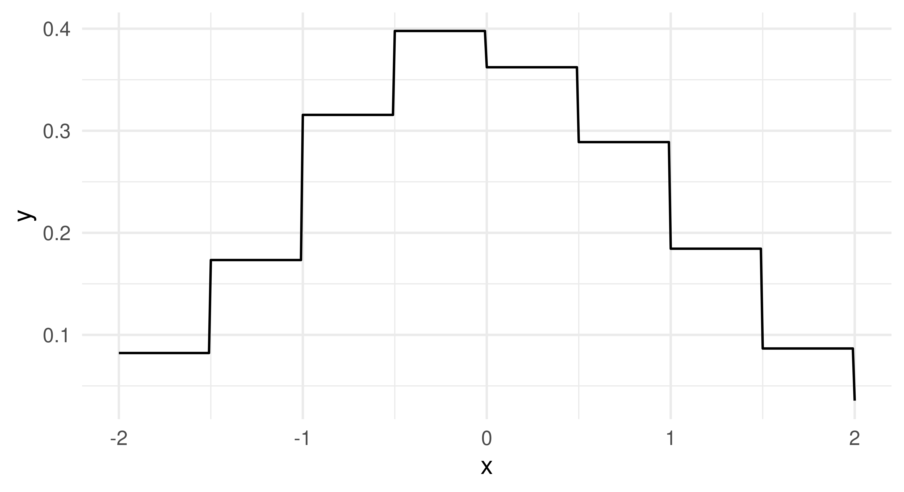
The pdf and cdf predict types are simply wrappers around distr$pdf and distr$cdf respectively:
prediction = lrn_hist$train(tsk_dens, 1:10)$predict(tsk_dens, 11:13)
# pdf and cdf columns in output
prediction<PredictionDens> for 3 observations:
row_ids pdf cdf
11 0.6 0.4849
12 0.2 0.3992
13 0.6 0.6208
1 variable(s) not shown: [distr]# comparing cdf from prediction to $cdf method from distr
cbind(prediction$distr$cdf(tsk_dens$data()$x[11:13]),
prediction$cdf[1:3]) [,1] [,2]
[1,] 0.4849 0.4849
[2,] 0.3992 0.3992
[3,] 0.6208 0.6208At the time of publication, the only measure implemented in mlr3proba for density estimation is logloss, which is defined in the same way as in classification, \(L(y) = -\log(\hat{f}_Y(y))\), where \(\hat{f}_Y\) is our estimated probability density function. Putting this together with the above we are now ready to train a density learner, estimate a distribution, and evaluate our estimation:
msr_logloss = msr("dens.logloss")
msr_logloss<MeasureDensLogloss:dens.logloss>: Log Loss
* Packages: mlr3, mlr3proba
* Range: [0, Inf]
* Minimize: TRUE
* Average: macro
* Parameters: eps=1e-15
* Properties: -
* Predict type: pdfprediction$score(msr_logloss)dens.logloss
0.877 This output is most easily interpreted when compared to other learners in a benchmark experiment, so let us put everything together to conduct a small benchmark study on tsk("faithful") task using some of the integrated density learners:
autoplot(bmr, measure = measure)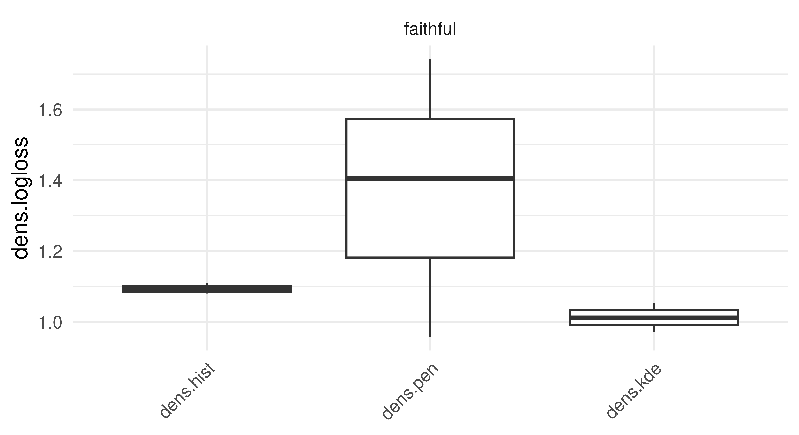
tsk("faithful").
The results (Figure 13.5) of this experiment indicate that the sophisticated Penalized Density Estimator does not outperform the baseline histogram, but the Kernel Density Estimator has at least consistently better (i.e. lower) logloss results.
Cluster analysis is another unsupervised task implemented in mlr3. The objective of cluster analysis is to group data into clusters, where each cluster contains similar observations. The similarity is based on specified metrics that are task and application-dependent. Unlike classification where we try to predict a class for each observation, in cluster analysis there is no ‘true’ label or class to predict.
The package mlr3cluster extends mlr3 with the following objects for cluster analysis:
TaskClust to define clustering tasksLearnerClust as the base class for clustering learnersPredictionClust as the specialized class for Prediction objectsMeasureClust as the specialized class for performance measuresWe will consider each in turn.
Similarly to density estimation (Section 13.3), there is no target for prediction and so no truth field in TaskClust. By example, we will look at the ruspini dataset, which has 75 rows and two columns and was first introduced in Ruspini (1970) to illustrate different clustering techniques. The observations in the dataset form four natural clusters (Figure 13.6). In the code below we construct a cluster task using as_task_clust() which only takes one argument, a data.frame type object.
library(mlr3verse)
library(cluster)
tsk_ruspini = as_task_clust(ruspini)
tsk_ruspini<TaskClust:ruspini> (75 x 2)
* Target: -
* Properties: -
* Features (2):
- int (2): x, ytsk_ruspini$data(1:3) # print first 3 rows x y
1: 4 53
2: 5 63
3: 10 59autoplot(tsk_ruspini)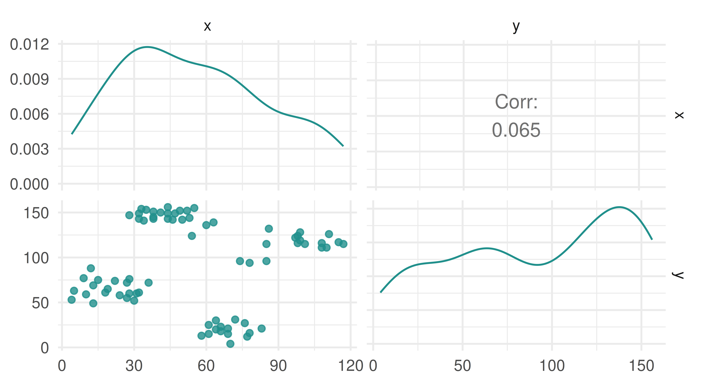
ruspini dataset.
Technically, we did not need to create a new task for the ruspini dataset since it is already included in the package, along with one other task:
as.data.table(mlr_tasks)[task_type == "clust", c(1:2, 4:5)] key label nrow ncol
1: ruspini Ruspini 75 2
2: usarrests US Arrests 50 4As with density estimation, we refer to training and predicting for clustering to be consistent with the mlr3 interface, but strictly speaking, this should be clustering and assigning (the latter we will return to shortly). Two predict_types are available for clustering learners:
"partition" – Estimate of which cluster an observation falls into"prob" – Probability of an observation belonging to each clusterSimilarly to classification, prediction types of clustering learners are either deterministic ("partition") or probabilistic ("prob").
Below we construct a C-Means clustering learner with "prob" prediction type and three clusters (centers = 3), train it on the ruspini dataset and then return the cluster assignments ($assignments) for six random observations.
lrn_cmeans = lrn("clust.cmeans", predict_type = "prob", centers = 3)
lrn_cmeans<LearnerClustCMeans:clust.cmeans>: Fuzzy C-Means Clustering Learner
* Model: -
* Parameters: centers=3
* Packages: mlr3, mlr3cluster, e1071
* Predict Types: partition, [prob]
* Feature Types: logical, integer, numeric
* Properties: complete, fuzzy, partitionallrn_cmeans$train(tsk_ruspini)
lrn_cmeans$assignments[sample(tsk_ruspini$nrow, 6)][1] 1 1 1 3 1 1As clustering is unsupervised, it often does not make sense to use predict for new data however this is still possible using the mlr3 interface.
# using different data for estimation (rare use case)
lrn_cmeans$train(tsk_ruspini, 1:30)$predict(tsk_ruspini, 31:32)<PredictionClust> for 2 observations:
row_ids partition prob.1 prob.2 prob.3
31 2 0.2750 0.7167 0.008326
32 2 0.3724 0.6212 0.006467# using same data as for estimation (common use case)
prediction = lrn_cmeans$train(tsk_ruspini)$predict(tsk_ruspini)
autoplot(prediction, tsk_ruspini)![Four grids. Top-left shows three overlapping curves in purple (cluster 1), blue (cluster 2) and green (cluster 3). The purple and blue curves are zero in most places but then peak at (30, 120) and (60, 120) respectively. The green curve starts at (0,0) then increases slowly to (40, 120) then decreases bumpily to (120, 60). Top-right says '-0.78' in green (cluster 3), '0' in blue (cluster 2), and '-0.05' in purple (cluster 1). Bottom-left shows four distinct clusters of points, two clusters are green, one (bottom) is blue, one (bottom left) is purple. Bottom-right: line graphs that show a similar but inverted shape as top-left.](beyond_regression_and_classification_files/figure-html/fig-beyond-clust-ruspini-estimated-1.png)
While two prediction types are possible, there are some learners where ‘prediction’ can never make sense, for example in hierarchical clustering. In hierarchical clustering, the goal is to build a hierarchy of nested clusters by either splitting large clusters into smaller ones or merging smaller clusters into bigger ones. The final result is a tree or dendrogram which can change if a new data point is added. For consistency, mlr3cluster offers a predict method for hierarchical clusters but with a warning:
lrn_hclust = lrn("clust.hclust", k = 2)
lrn_hclust$train(tsk_ruspini)$predict(tsk_ruspini)Warning: Learner 'clust.hclust' doesn't predict on new data and
predictions may not make sense on new data.<PredictionClust> for 75 observations:
row_ids partition
1 1
2 1
3 1
--- ---
73 1
74 1
75 1autoplot(lrn_hclust) + theme(axis.text = element_text(size = 5.5))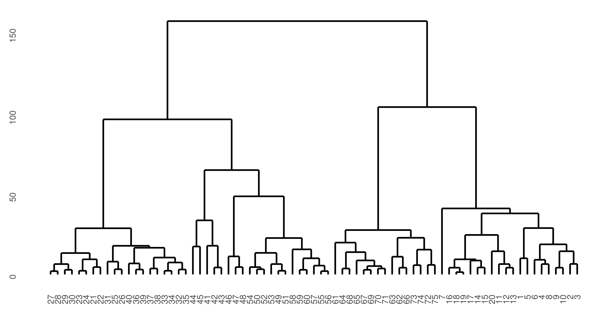
ruspini dataset. y-axis is similarity of points such that the lower observations (x-axis) are connected, the greater their similarity. The top split represents the separation of the two clusters.
In this case, the predict method simply cuts the dendrogram into the number of clusters specified by k parameter of the learner.
As previously discussed, unsupervised tasks do not have ground truth data to compare to in model evaluation. However, we can still measure the quality of cluster assignments by quantifying how closely objects within the same cluster are related (cluster cohesion) as well as how distinct different clusters are from each other (cluster separation). There are a few built-in evaluation metrics available to assess the quality of clustering, which can be found by searching the mlr_measures dictionary.
Two common measures are the within sum of squares (WSS) measure (msr("clust.wss")) and the silhouette coefficient (msr("clust.silhouette")). WSS calculates the sum of squared differences between observations and centroids, which is a quantification of cluster cohesion (smaller values indicate the clusters are more compact). The silhouette coefficient quantifies how well each point belongs to its assigned cluster versus neighboring clusters, where scores closer to 1 indicate well clustered and scores closer to -1 indicate poorly clustered. Note that the silhouette measure in mlr3cluster returns the mean silhouette score across all observations and when there is only a single cluster, the measure simply outputs 0.
Putting this together with the above we can now score our cluster estimation (note we must pass the task to $score):
clust.wss clust.silhouette
5.116e+04 6.414e-01 The very high WSS and middling mean silhouette coefficient indicate that our clusters could do with a bit more work.
Often reducing an unsupervised task to a quantitative measure may not be useful (given no ground truth) and instead visualization (discussed next) may be a more effective tool for assessing the quality of the clusters.
As clustering is an unsupervised task, visualization can be essential not just for ‘evaluating’ models but also for determining if our learners are performing as expected for our task. This section will look at visualizations for supporting clustering choices and following that we will consider plots for evaluating model performance.
It is easy to rely on clustering measures to assess the quality of clustering however this should be done with care as choosing between models may come down to other decisions such as how clusters are formed. By example, consider data generated by mlbench.spirals, which results in two individual lines that spiral around each other (Figure 13.9).
spirals = mlbench::mlbench.spirals(n = 300, sd = 0.01)
tsk_spirals = as_task_clust(as.data.frame(spirals$x))
autoplot(tsk_spirals)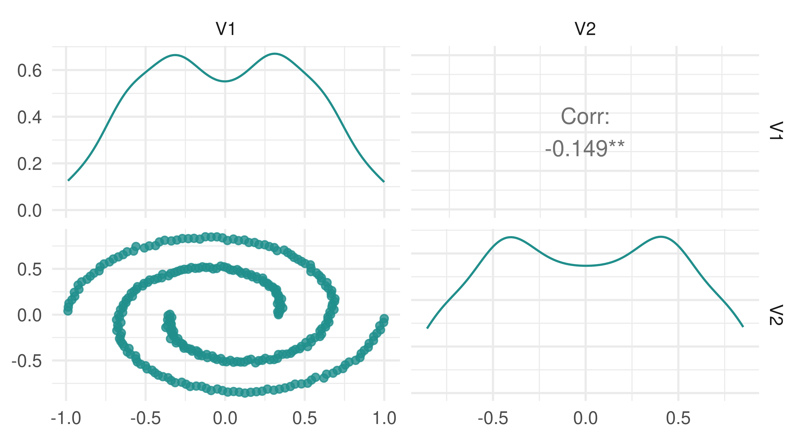
spirals data.
Now let us see what happens when fit two clustering learners on this data:
learners = list(
lrn("clust.kmeans"),
lrn("clust.dbscan", eps = 0.1)
)
bmr = benchmark(benchmark_grid(tsk_spirals, learners, rsmp("insample")))
bmr$aggregate(msr("clust.silhouette"))[, c(4, 7)] learner_id clust.silhouette
1: clust.kmeans 0.37283
2: clust.dbscan 0.02932We can see that K-means clustering gives us a higher average silhouette score and so we might conclude that a K-means learner with two centroids is a better choice than the DBSCAN method. However, now take a look at the cluster assignment plots in Figure 13.10 (autoplot.PredictionClust is available but we do not use it here so we can highlight two particular plots).
library(patchwork)
# get K-Means and DBSCAN partitions
pred_kmeans = as.factor(bmr$resample_result(1)$prediction()$partition)
pred_dbscan = as.factor(bmr$resample_result(2)$prediction()$partition)
# plot
df_kmeans = cbind(tsk_spirals$data(), clust = pred_kmeans)
df_dbscan = cbind(tsk_spirals$data(), clust = pred_dbscan)
map = aes(x = V1, y = V2, color = clust)
p_kmeans = ggplot(df_kmeans, map) + ggtitle("K-means")
p_dbscan = ggplot(df_dbscan, map) + ggtitle("DBSCAN")
p_kmeans + p_dbscan + plot_layout(guides = "collect") & geom_point() &
theme_minimal() & ggplot2::scale_colour_viridis_d(end = 0.8)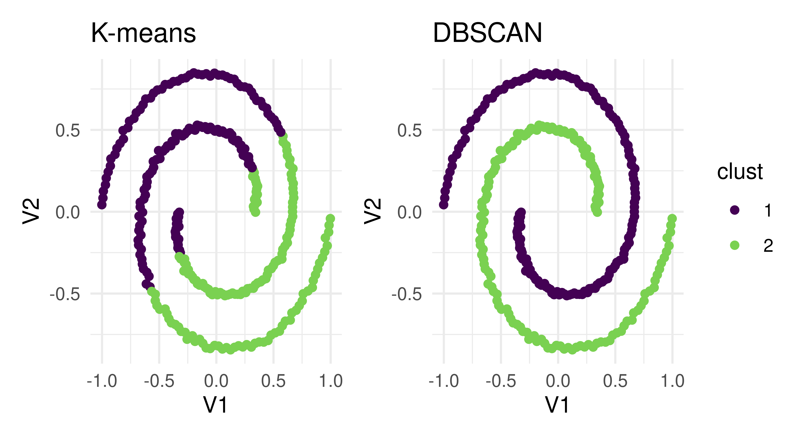
lrn("clust.kmeans") and lrn("clust.dbscan"). Both create two distinct clusters that are separated in different ways.
The two learners arrived at two different results to cleanly separate clusters – the K-means algorithm assigned points that are part of the same line into two different clusters whereas DBSCAN assigned each line to its own cluster. Which one of these approaches is correct? The answer is it depends on your specific task and the goal of cluster analysis. If we had only relied on the silhouette score, then the details of how the clustering was performed would have been masked and we would have been unable to decide which method was appropriate for the task.
The two most important plots implemented in mlr3viz to support the evaluation of cluster learners are PCA and silhouette plots.
Principal components analysis (PCA) is a commonly used dimension reduction method in ML to reduce the number of variables in a dataset or to visualize the most important ‘components’, which are linear transformations of the dataset features. Components are considered more important if they have higher variance (and therefore more predictive power). In the context of clustering, by plotting observations against the first two components, and then coloring them by cluster, we could visualize our high-dimensional dataset and we would expect to see observations in distinct groups.
Since our running example only has two features, PCA does not make sense to visualize the data. So we will use a task based on the USArrests dataset instead. By plotting the result of PCA (Figure 13.11), we see that our model has done a good job of separating observations into two clusters along the first two principal components.
tsk_usarrests = tsk("usarrests")
prediction = lrn("clust.kmeans")$train(tsk_usarrests)$
predict(tsk_usarrests)
autoplot(prediction, tsk_usarrests, type = "pca")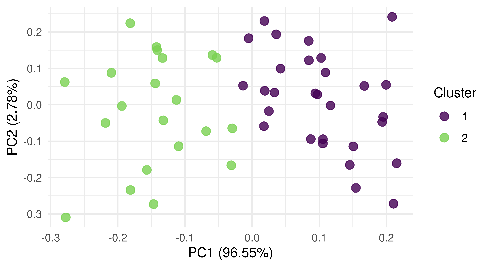
tsk("usarrests").
Silhouette plots visually assess the quality of the estimated clusters by visualizing if observations in a cluster are well-placed both individually and as a group. The plots include a dotted line which visualizes the average silhouette coefficient across all data points and each data point’s silhouette value is represented by a bar colored by their assigned cluster. In our particular case, the average silhouette index is 0.59. If the average silhouette value for a given cluster is below the average silhouette coefficient line then this implies that the cluster is not well defined.
Continuing with our new example, we find (Figure 13.12) that a lot of observations are actually below the average line and close to zero, and therefore the quality of our cluster assignments is not very good, meaning that many observations are likely assigned to the wrong cluster.
autoplot(prediction, tsk_usarrests, type = "sil")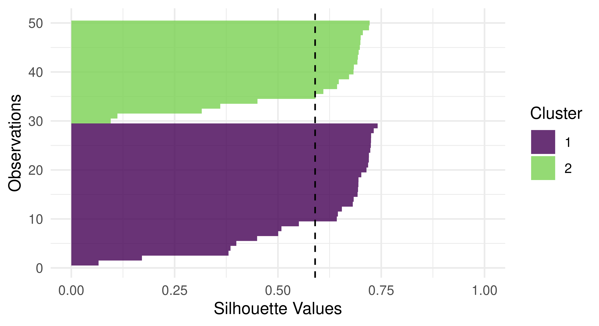
lrn("clust.kmeans") on tsk("usarrests").
Finally, we conduct a small benchmark study using tsk("usarrests") and a few integrated cluster learners:
tsk_usarrests = tsk("usarrests")
learners = list(
lrn("clust.featureless"),
lrn("clust.kmeans", centers = 4L),
lrn("clust.cmeans", centers = 3L)
)
measures = list(msr("clust.wss"), msr("clust.silhouette"))
bmr = benchmark(benchmark_grid(tsk_usarrests, learners,
rsmp("insample")))
bmr$aggregate(measures)[, c(4, 7, 8)] learner_id clust.wss clust.silhouette
1: clust.featureless 355808 0.0000
2: clust.kmeans 37653 0.4774
3: clust.cmeans 47964 0.5319The C-means and K-means algorithms are both considerably better than the featureless baseline but further analysis (and visualizations) would be required to decide which of those two is suitable for our needs.
The final task we will discuss in this book is spatial analysis. Spatial analysis can be a subset of any other machine learning task (e.g., regression or classification) and is defined by the presence of spatial information in a dataset, usually stored as coordinates that are often named “x” and “y” or “lat” and “lon” (for ‘latitude’ and ‘longitude’ respectively.)
Spatial analysis is its own task as spatial data must be handled carefully due to the complexity of ‘autocorrelation’. Where correlation is defined as a statistical association between two variables, autocorrelation is a statistical association within one variable. In ML terms, in a dataset with features and observations, correlation occurs when two or more features are statistically associated in some way, whereas autocorrelation occurs when two or more observations are statistically associated across one feature. Autocorrelation, therefore, violates one of the fundamental assumptions of ML that all observations in a dataset are independent, which results in lower confidence about the quality of a trained machine learning model and the resulting performance estimates (Hastie, Friedman, and Tibshirani 2001).
Autocorrelation is present in spatial data as there is implicit information encoded in coordinates, such as whether two observations (e.g., cities, countries, continents) are close together or far apart. By example, let us imagine we are predicting the number of cases of a disease two months after an outbreak in Germany (Figure 13.13). Outbreaks radiate outwards from an epicenter and therefore countries closer to Germany will have higher numbers of cases and countries further away will have lower numbers (Figure 13.13, bottom). Thus, looking at the data spatially shows clear signs of autocorrelation across nearby observations. Note in this example the autocorrelation is radial but in practice, this will not always be the case.
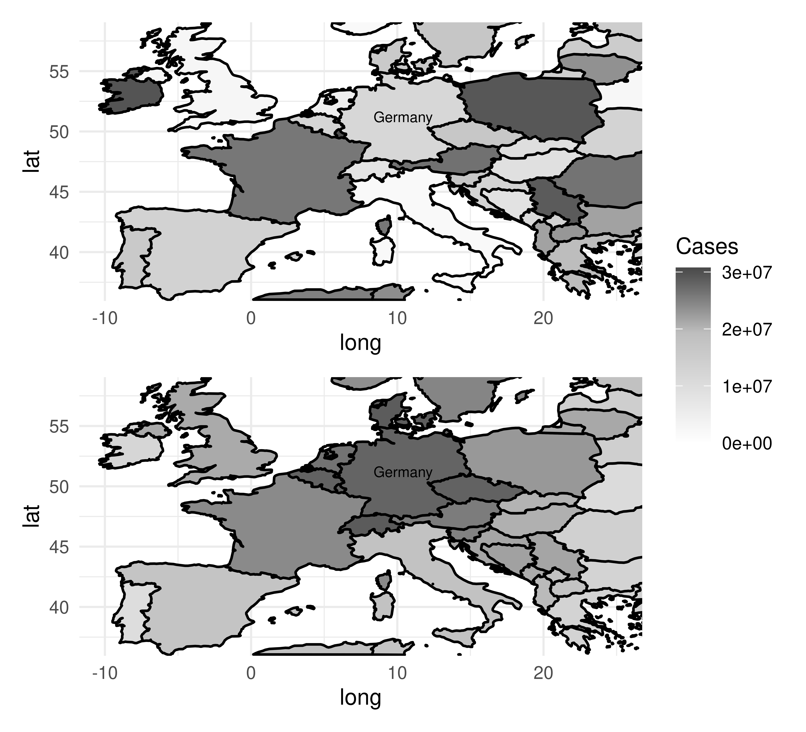
Unlike other tasks we have looked at in this chapter, there is no underlying difference between the implemented learners or measures. Instead, we provide additional resampling methods in mlr3spatiotempcv to account for the similarity in the train and test sets during resampling that originates from spatiotemporal autocorrelation.
Throughout this section we will use the ecuador dataset and task as a working example.
To make use of spatial resampling methods, we have implemented two extensions of TaskClassif and TaskRegr to accommodate spatial data, TaskClassifST and TaskRegrST respectively. Below we only show classification examples but regression follows trivially.
library(mlr3spatial)
library(mlr3spatiotempcv)
# create task from `data.frame`
tsk_ecuador = as_task_classif_st(ecuador, id = "ecuador_task",
target = "slides", positive = "TRUE",
coordinate_names = c("x", "y"), crs = "32717")
# or create task from 'sf' object
data_sf = sf::st_as_sf(ecuador, coords = c("x", "y"), crs = "32717")
tsk_ecuador = as_task_classif_st(data_sf, target = "slides",
positive = "TRUE")
tsk_ecuador<TaskClassifST:data_sf> (751 x 11)
* Target: slides
* Properties: twoclass
* Features (10):
- dbl (10): carea, cslope, dem, distdeforest, distroad,
distslidespast, hcurv, log.carea, slope, vcurv
* Coordinates:
X Y
1: 712882 9560002
2: 715232 9559582
3: 715392 9560172
4: 715042 9559312
5: 715382 9560142
---
747: 714472 9558482
748: 713142 9560992
749: 713322 9560562
750: 715392 9557932
751: 713802 9560862Once a task is created, you can train and predict as normal.
lrn("classif.rpart")$train(tsk_ecuador)$predict(tsk_ecuador)<PredictionClassif> for 751 observations:
row_ids truth response
1 TRUE TRUE
2 TRUE TRUE
3 TRUE TRUE
--- --- ---
749 FALSE FALSE
750 FALSE FALSE
751 FALSE TRUEHowever as discussed above, it is best to use the specialized resampling methods to achieve bias-reduced estimates of model performance.
Before we look at the spatial resampling methods implemented in mlr3spatiotempcv we will first show what can go wrong if non-spatial resampling methods are used for spatial data. Below we benchmark a decision tree on tsk("ecuador") using two different repeated cross-validation resampling methods, the first (“NSpCV” (non-spatial cross-validation)) is a non-spatial resampling method from mlr3, the second (“SpCV” (spatial cross-validation)) is from mlr3spatiotempcv and is optimized for spatial data. The example highlights how “NSpCV” makes it appear as if the decision tree is performing better than it is with considerably higher estimated performance, however, this is an overconfident prediction due to the autocorrelation in the data.
lrn_rpart = lrn("classif.rpart", predict_type = "prob")
rsmp_nsp = rsmp("repeated_cv", folds = 3, repeats = 2, id = "NSpCV")
rsmp_sp = rsmp("repeated_spcv_coords", folds = 3, repeats = 2,
id = "SpCV")
design = benchmark_grid(tsk_ecuador, lrn_rpart, c(rsmp_nsp, rsmp_sp))
bmr = benchmark(design)
bmr$aggregate(msr("classif.acc"))[, c(5, 7)] resampling_id classif.acc
1: NSpCV 0.6864
2: SpCV 0.5842In the above example, applying non-spatial resampling results in train and test sets that are very similar due to the underlying spatial autocorrelation. Hence there is little difference from testing a model on the same data it was trained on, which should be avoided for an honest performance result (see Chapter 2). In contrast, the spatial method has accommodated autocorrelation and the test data is less correlated (though some association will remain) with the training data. Visually this can be seen using autoplot() methods. In Figure 13.14 we visualize how the task is partitioned according to the spatial resampling method (Figure 13.14, left) and non-spatial resampling method (Figure 13.14, right). There is a clear separation in space for the respective partitions when using the spatial resampling whereas the train and test splits overlap a lot (and are therefore more correlated) using the non-spatial method.
library(patchwork)
(autoplot(rsmp_sp, tsk_ecuador, fold_id = 1, size = 0.7) +
ggtitle("Spatial Resampling") +
autoplot(rsmp_nsp, tsk_ecuador, fold_id = 1, size = 0.7) +
ggtitle("Non-spatial Resampling")) +
plot_layout(guides = "collect") &
theme_minimal() &
theme(axis.text = element_text(size = 4), legend.position = "bottom")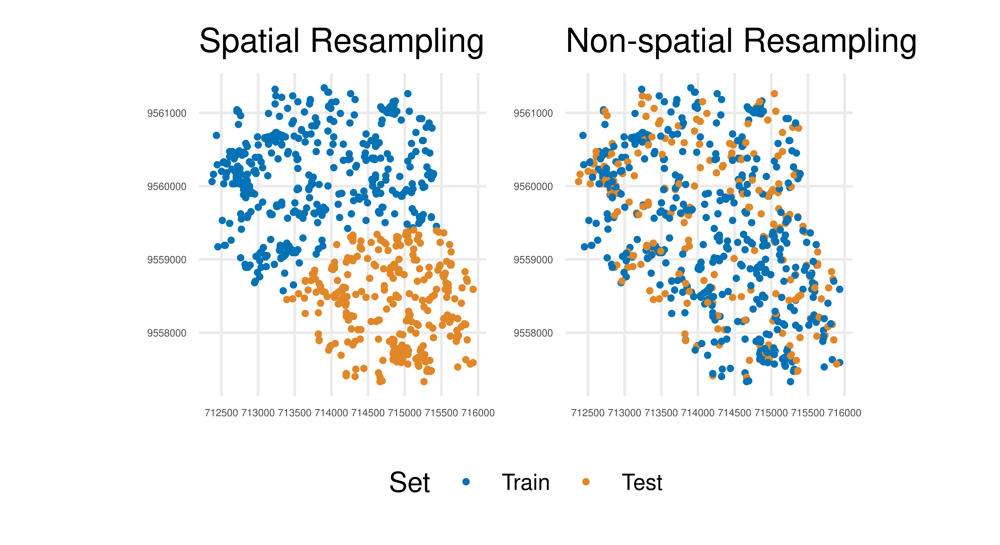
Now we have seen why spatial resampling matters we can take a look at what methods are available in mlr3spatiotempcv. The resampling methods we have added can be categorized into:
The choice of method may depend on specific characteristics of the dataset and there is no easy rule to pick one method over another, full details of different methods can be found in Schratz et al. (2021) – the paper deliberately avoids recommending one method over another as the ‘optimal’ choice is highly dependent on the predictive task, autocorrelation in the data, and the spatial structure of the sampling design. The documentation for each of the implemented methods includes details of each method as well as references to original publications.
We have focused on spatial analysis but referred to “spatiotemporal” and “spatiotemp”. The spatial-only resampling methods discussed in this section can be extended to temporal analysis (or spatial and temporal analysis combined) by setting the "time" col_role in the task (Section 2.6) – this is an advanced topic that may be added in future editions of this book. See the mlr3spatiotempcv visualization vignette at https://mlr3spatiotempcv.mlr-org.com/articles/spatiotemp-viz.html for specific details about 3D spatiotemporal visualization.
Until now we have looked at resampling to accommodate spatiotemporal features, but what if you want to make spatiotemporal predictions? In this case, the goal is to make classification or regression predictions at the pixel level, i.e., for an area, defined by the geometric resolution, of a raster image.
To enable these predictions we have created a new function, predict_spatial(), to allow spatial predictions using any of the following spatial data classes:
stars (from package stars)SpatRaster (from package terra)RasterLayer (from package raster)RasterStack (from package raster)In the example below we load the leipzig_points dataset for training and coerce this to a spatiotemporal task with as_task_classif_st, and we load the leipzig_raster raster. Both files are included as example data in mlr3spatial.
library(mlr3spatial)
library(sf)
library(terra, exclude = "resample")
# load sample points
leipzig_vector = sf::read_sf(system.file("extdata",
"leipzig_points.gpkg", package = "mlr3spatial"),
stringsAsFactors = TRUE)
# create training data
tsk_leipzig = as_task_classif_st(leipzig_vector, target = "land_cover")
# load raster image
leipzig_raster = terra::rast(system.file("extdata", "leipzig_raster.tif",
package = "mlr3spatial"))Now we can continue as normal to train and predict with a classification learner, in this case, a random forest.
lrn_ranger = lrn("classif.ranger")$train(tsk_leipzig)
prediction = predict_spatial(leipzig_raster, lrn_ranger,
format = "terra")Warning in warn_deprecated("DataBackend$data_formats"):
DataBackend$data_formats is deprecated and will be removed in the
future.predictionclass : SpatRaster
dimensions : 206, 154, 1 (nrow, ncol, nlyr)
resolution : 10, 10 (x, y)
extent : 731810, 733350, 5692030, 5694090 (xmin, xmax, ymin, ymax)
coord. ref. : WGS 84 / UTM zone 32N (EPSG:32632)
source : file13c51fb55e7c.tif
categories : categories
name : land_cover
min value : forest
max value : water In this example, we specified the creation of a terra object, which can be visualized with in-built plotting methods.
In this chapter, we explored going beyond regression and classification to see how classes in mlr3 can be used to implement other ML tasks. Cost-sensitive classification extends the ‘normal’ classification setting by assuming that costs associated with false negatives and false positives are unequal. Running cost-sensitive classification experiments is possible using only features in mlr3. Survival analysis, available in mlr3proba, can be thought of as a regression problem when the outcome may be censored, which means it may never be observed within a given time frame. The final task in mlr3proba is density estimation, the unsupervised task concerned with estimating univariate probability distributions. Using mlr3cluster, you can perform cluster analysis on observations, which involves grouping observations according to similarities in their variables. Finally, with mlr3spatial and mlr3spatiotempcv, it is possible to perform spatial analysis to make predictions using coordinates as features and to make spatial predictions. The mlr3 interface is highly extensible, which means future ML tasks can (and will) be added to our universe and we will add these to this chapter of the book in future editions.
| Class | Constructor/Function | Fields/Methods |
|---|---|---|
MeasureClassifCosts |
msr("classif.costs") |
- |
PipeOpTuneThreshold |
po("tunethreshold") |
- |
TaskSurv |
as_task_surv() |
$data() |
PipeOpDistrCompositor |
po("distrcompose") |
- |
TaskDens |
as_task_dens() |
$data() |
TaskClust |
as_task_clust() |
$data() |
TaskClassifST |
as_task_classif_st() |
$data() |
| - | predict_spatial() |
tsk("german_credit") with lrn("classif.featureless"), lrn("classif.log_reg"), and lrn("classif.ranger"). Tune the prediction thresholds of all learners by encapsulating them in a po("learner_cv") (with two-fold CV), followed by a po("tunethreshold"). Use msr("classif.costs", costs = costs), where the costs matrix is as follows: true positive is -10, true negative is -1, false positive is 2, and false negative is 3. Use this measure in po("tunethreshold") and when evaluating your benchmark experiment.lrn("surv.rfsrc") (from mlr3extralearners). Run this experiment using tsk("rats") and partition(). Evaluate your model with the RCLL measure.mlr3proba package using lrn("dens.hist"), evaluate your estimation with the logloss measure. As a stretch goal, look into the documentation of distr6 to learn how to analyse your estimated distribution further.k equal to 2, 3 and 4 using the silhouette measure and the insample resampling technique. What value of k would you choose based on the silhouette scores?Please cite this chapter as:
Sonabend R, Schratz P, Pulatov D, Zobolas J. (2024). Beyond Regression and Classification. In Bischl B, Sonabend R, Kotthoff L, Lang M, (Eds.), Applied Machine Learning Using mlr3 in R. CRC Press. https://mlr3book.mlr-org.com/beyond_regression_and_classification.html.
@incollection{citekey,
author = "Raphael Sonabend and Patrick Schratz and Damir Pulatov and John Zobolas",
title = "Beyond Regression and Classification",
booktitle = "Applied Machine Learning Using {m}lr3 in {R}",
publisher = "CRC Press", year = "2024",
editor = "Bernd Bischl and Raphael Sonabend and Lars Kotthoff and Michel Lang",
url = "https://mlr3book.mlr-org.com/beyond_regression_and_classification.html"
}